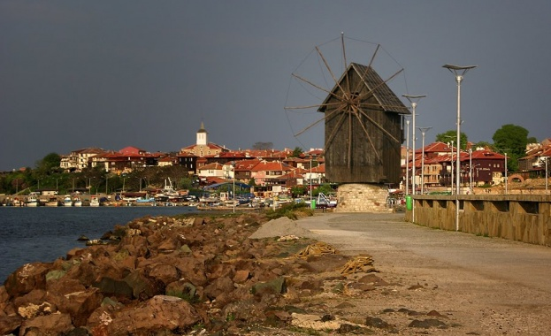
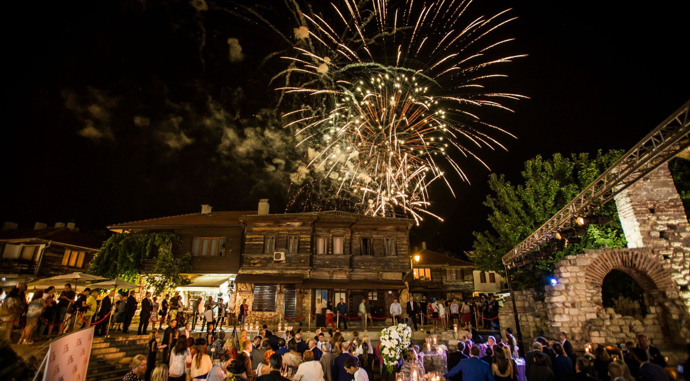
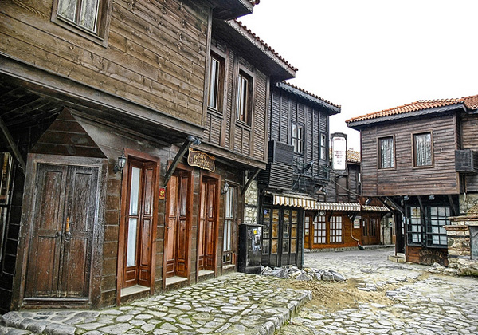
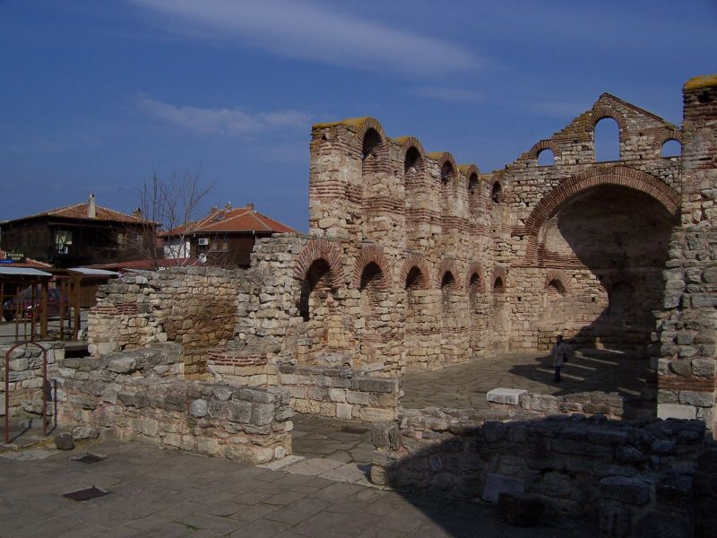
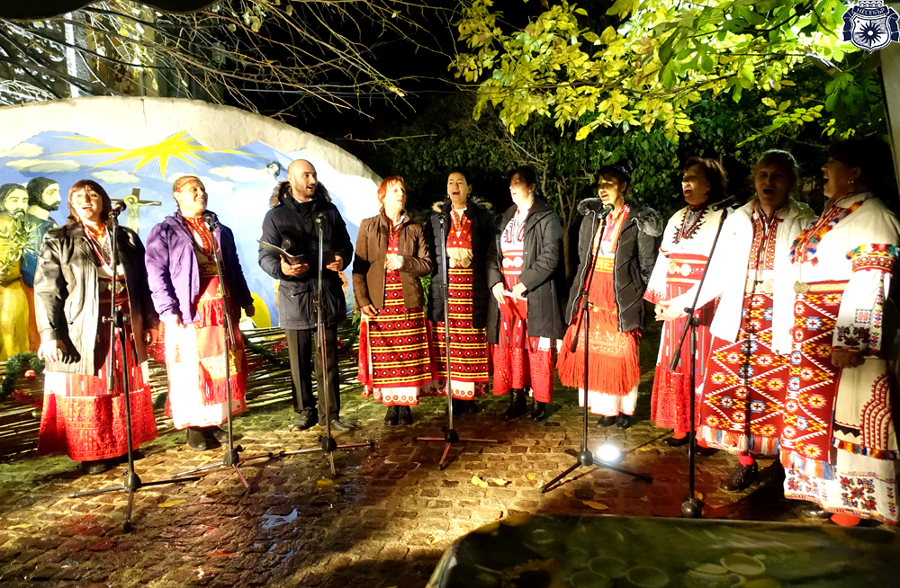
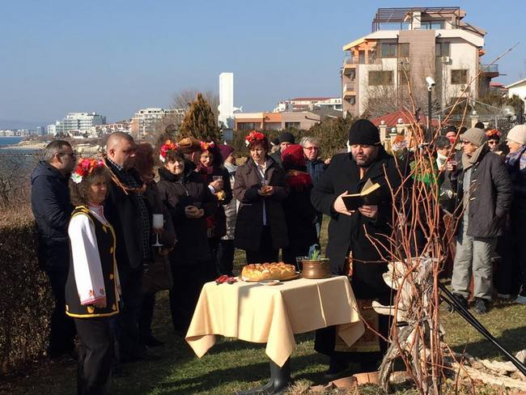
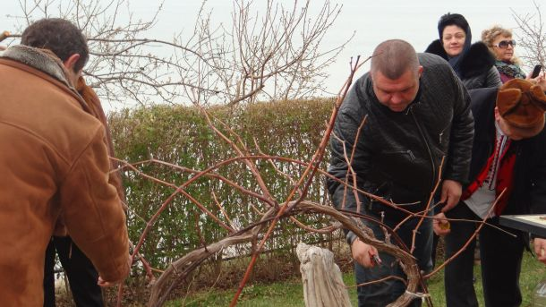

Несебър-Традиции и обичаи
Празник на Несебър
| Град Несебър отбелязва своя празник на 15 август празника на Божията майка „Успение Богордично” в едноименния храм в Стария град. Целият ден преминава под знака на доброто настроение и дадва възможност на хиляди хора да се включат в празненствата, организирани ежегодно от Община Несебър. Събитията за 15 август са с динамиката от предходните години, ще има и приятни изненади, които ще бъдат комплимент към всички, решили да празнуват с ритъма на вечния град. Малкият живописен полуостров отново ще се превърне в огромна сцена, а всеки, който реши може да се докосне до магията на празника и да отнесе със себе си незабравим спомен, споделен с хиляди гости от цял свят, обединени от желанието да се веселят заедно. Несебър отбелязва празника си със зрелищна заря, въздействащо светлинно шоу и емоционални концерти. |  | |
| Изглед от Стария град в Несебър | ||
|---|---|---|
|  |
 |
 |
Андрееден
| На този ден в храмовия двор се палят коледните светлини, символ на очакването на един от най-тържествените празници в църковния календар - Христовото раждане. В празничната вечер свещеникът на храма отец Петър бе облечен в оригинална народна носия. Той произнесе прочувствено слово пред препълнения с хора църковен двор, като поздрави присъстващите с настъпващите светлите празници и им пожела здраве, светлина в домовете, мъдрост и духовна чистота. Българската поговорка гласи: „На Едрей ден започва да наедрява денят, колкото едно просено /житно, маково или синапено/зърно“. На трапезата на този ден трябва да присъства жито, боб, леща, грах, просо или ечемик. |  |
Трифон Зарезан-Свети Влас
| В дните около 14 февруари, когато се честват Трифон Зарезан – светецът на винарите и Св. Валентин – покровителят на влюбените, в община Несебър традиционно се провеждат празници, посветени на двете най-възпявани стихии – виното и любовта. В традиционния конкурс за най-добро бяло и червено вино, организиран в Гюльовца, се включиха 22 майстори на домашното вино. Според обичая, на Трифон Зарезан колкото повече червено вино се лее, толкова по-плодородна и успешна ще е годината за лозарите. Това е един от първите големи празници, който се посреща с народно веселие преди началото на пролетта. |  |
|  | Известен е още като Ден на винаря и се отбелязва в чест на Свети мъченик Трифон. Празникът започва с шествие, което тръгва от сградата на кметството до лозница, която се намира на брега на морето. Там кметът Иван Николов се посреща с топла пита и мед, вино и ракия от миналогодишна реколта. На място се извършва водосвет за здраве и берекет, а градоначалникът извършва ритуално зарязване на лозови пръчки и полива лозницата с вино за благодат през годината. Стопанинът на лозницата се окичва с венец от лозови пръчки през раменете. |